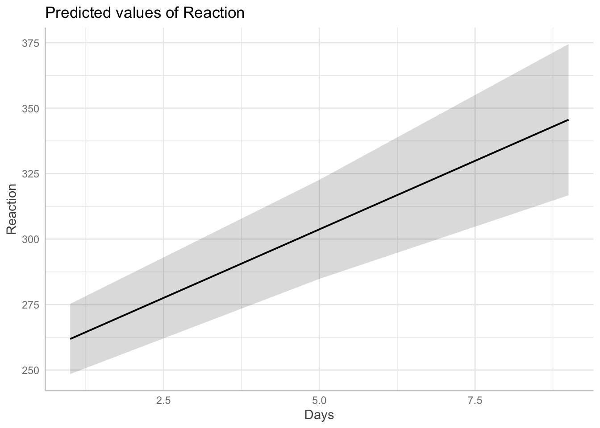

28 Intervalos de confianza
En este capítulo vamos mostrar como se pueden obtener intervalos de confianza para los parámetros del modelo e intervalos de confianza para predicción.
28.1 Intervalos de confianza para los parámetros
En esta sección se mostrará cómo utilizar la función confint() para obtener intervalos de confianza para los elementos del vector de parámetros \(\boldsymbol{\Theta}\) de un modelo lineal generalizado mixto.
Ejemplo: modelo normal
En este ejemplo su usará la base de datos sleepstudy del paquete lme4 sobre el tiempo de reacción promedio por día para un conjunto de individuos en un estudio de privación del sueño. La base de datos contiene la información sobre el tiempo de reacción promedio (Reaction), el número de días de privación del sueño (Days), donde el día 0 corresponde al día en el que los indiviuos tenían su cantidad normal de sueño, y el número del individuo (en total 18) sobre el que se realizó la observación (Subject). A partir del día 0, hubo una restricción en cada individuo a 3 horas de sueño por noche.

El objetivo es ajustar el siguiente modelo a los datos.
\[\begin{align*} Reaction_{ij} | b_0, b_1 &\sim N(\mu_{ij}, \sigma^2_{Reaction}) \\ \mu_{ij} &= \beta_0 + \beta_1 Days_{ij} + b_{0i} + b_{1i} Days_{ij} \\ \left ( \begin{matrix} b_{0} \\ b_{1} \end{matrix} \right ) &\sim N\left ( \left [ \begin{matrix} 0 \\ 0 \end{matrix} \right ], \left [ \begin{matrix} \sigma^2_{b0} & \sigma_{b01} \\ \sigma_{b01} & \sigma^2_{b1} \end{matrix} \right ] \right ) \end{align*}\]
Lo primero que debemos hacer es ajustar el modelo usando el siguiente código.
## Reaction Days Subject pred_inter_pend_aleatorio modelo_simple
## 1 249.5600 0 308 253.6637 251.4051
## 2 258.7047 1 308 273.3299 261.8724
## 3 250.8006 2 308 292.9962 272.3397
## 4 321.4398 3 308 312.6624 282.8070
## 5 356.8519 4 308 332.3287 293.2742
## 6 414.6901 5 308 351.9950 303.7415
## pred_inter_aleatorio pred_pend_aleatorio
## 1 292.1888 251.4051
## 2 302.6561 271.4918
## 3 313.1234 291.5785
## 4 323.5907 311.6652
## 5 334.0580 331.7519
## 6 344.5252 351.8386La tabla de resultados del modelo ajustado se muestra a continuación.
## Linear mixed model fit by REML ['lmerMod']
## Formula: Reaction ~ Days + (Days | Subject)
## Data: sleepstudy
##
## REML criterion at convergence: 1743.6
##
## Scaled residuals:
## Min 1Q Median 3Q Max
## -3.9536 -0.4634 0.0231 0.4634 5.1793
##
## Random effects:
## Groups Name Variance Std.Dev. Corr
## Subject (Intercept) 612.10 24.741
## Days 35.07 5.922 0.07
## Residual 654.94 25.592
## Number of obs: 180, groups: Subject, 18
##
## Fixed effects:
## Estimate Std. Error t value
## (Intercept) 251.405 6.825 36.838
## Days 10.467 1.546 6.771
##
## Correlation of Fixed Effects:
## (Intr)
## Days -0.138De la tabla anterior podemos ver que las estimaciones del vector de parámetros es
\[ \hat{\boldsymbol{\Theta}} = (\hat{\beta_0}=251.40, \hat{\beta_1}=10.47, \hat{\sigma}_{reaction}=25.59, \hat{\sigma}_{b0}=24.74, \hat{\sigma}_{b1}=5.92, \hat{\rho}_{b0b1}=0.07)^\top \]
Para obtener los intervalos de confianza podemos usar la función confint() al objeto fit.
## Computing profile confidence intervals ...## 2.5 % 97.5 %
## .sig01 14.3814379 37.7159918
## .sig02 -0.4815008 0.6849863
## .sig03 3.8011643 8.7533658
## .sigma 22.8982669 28.8579965
## (Intercept) 237.6806955 265.1295145
## Days 7.3586533 13.5759188También es posible obtener los intervalos de confianza por el método boostrap así.
## Computing bootstrap confidence intervals ...##
## 11 message(s): boundary (singular) fit: see help('isSingular')
## 7 warning(s): Model failed to converge with max|grad| = 0.00237033 (tol = 0.002, component 1) (and others)## 2.5 % 97.5 %
## .sig01 12.9637679 35.9428046
## .sig02 -0.5360978 0.8664981
## .sig03 3.1342841 8.4724073
## .sigma 22.6178539 28.5395275
## (Intercept) 237.7970463 265.0299430
## Days 7.3768799 13.7273663Ejemplo: modelo gamma
En este ejemplo analizamos los datos de semiconductores tomados de Myers et al. (2002) sobre un experimento diseñado en una planta de semiconductores. Se emplean seis factores, temperatura de laminación, tiempo de laminación, presión de laminación, temperatura de cocción, tiempo de ciclo de cocción y punto de rocío de cocción, y estamos interesados en la curvatura de los dispositivos de sustrato producidos en la planta. La medición de la curvatura se realiza cuatro veces en cada dispositivo fabricado. Cada variable de diseño se toma en dos niveles. Se sabe que la medida no tiene una distribución normal y las medidas tomadas en el mismo dispositivo están correlacionadas.
Las variables de la base de datos se muestran a continuación.
- Device: Subtrate device
- x1: Lamination Temperature; two levels +1 and -1.
- x2: Lamination Time; two levels: +1 and -1.
- x3: Lamination Presure; two levels: +1 and -1.
- x4: Firing Temperature; two levels: +1 and -1.
- x5: Firing Cycle Time; two levels: +1 and -1.
- x6: Firing Dew Point: two levels: +1 and -1.
- y: Camber measure; in 1e-4 in./in.

El objetivo es ajustar el siguiente modelo a los datos.
\[\begin{align*} y_{ij} | b_0 &\sim Gamma(\mu_{ij}, \phi) \\ \log(\mu_{ij}) &= \beta_0 + \beta_1 x1_{ij} + \beta_3 x3_{ij} + \beta_5 x5_{ij} + \beta_6 x6_{ij} + b_{0i} \\ b_{0} &\sim N(0, \sigma^2_{b0}) \end{align*}\]
Para ajustar el modelo anterior usamos el siguiente código.
library(hglm)
data(semiconductor)
library(glmmTMB)
fit <- glmmTMB(y ~ x1 + x3 + x5 + x6 + (1 | Device),
data = semiconductor,
family = Gamma(link = log))
summary(fit)## Family: Gamma ( log )
## Formula: y ~ x1 + x3 + x5 + x6 + (1 | Device)
## Data: semiconductor
##
## AIC BIC logLik -2*log(L) df.resid
## -545.2 -530.1 279.6 -559.2 57
##
## Random effects:
##
## Conditional model:
## Groups Name Variance Std.Dev.
## Device (Intercept) 0.02505 0.1583
## Number of obs: 64, groups: Device, 16
##
## Dispersion estimate for Gamma family (sigma^2): 0.101
##
## Conditional model:
## Estimate Std. Error z value Pr(>|z|)
## (Intercept) -4.69447 0.05635 -83.31 < 2e-16 ***
## x1 0.18290 0.05629 3.25 0.001158 **
## x3 0.30496 0.05629 5.42 6.04e-08 ***
## x5 -0.19565 0.05632 -3.47 0.000513 ***
## x6 -0.36961 0.05630 -6.57 5.19e-11 ***
## ---
## Signif. codes: 0 '***' 0.001 '**' 0.01 '*' 0.05 '.' 0.1 ' ' 1De la tabla anterior podemos ver que las estimaciones del vector de parámetros es
\[ \hat{\boldsymbol{\Theta}} = (\hat{\beta_0}=-4.71, \hat{\beta_1}=0.18, \hat{\beta_3}=0.31, \hat{\beta_5}=-0.19, \hat{\beta_6}=-0.37, \hat{\phi}=0.31, \hat{\sigma}_{b0}=0.17)^\top \]
Para obtener los intervalos de confianza podemos usar la función confint() al objeto fit.
28.2 Intervalos de confianza para predicción
En esta sección se mostrará cómo utilizar el paquete ggeffects para obtener intervalos de confianza para predicciones de un modelo lineal generalizado mixto.
Ejemplo: modelo normal
En este ejemplo vamos a retomar los datos sleepstudy del paquete lme4 sobre el tiempo de reacción promedio por día para un conjunto de individuos en un estudio de privación del sueño. La base de datos contiene la información sobre el tiempo de reacción promedio (Reaction), el número de días de privación del sueño (Days), donde el día 0 corresponde al día en el que los indiviuos tenían su cantidad normal de sueño, y el número del individuo (en total 18) sobre el que se realizó la observación (Subject). A partir del día 0, hubo una restricción en cada individuo a 3 horas de sueño por noche.
Primero vamos a ajustar el modelo de interés.
library(ggeffects)
library(lme4)
data(sleepstudy)
# balanced data set
fit <- lmer(Reaction ~ Days + (1 + Days | Subject), data = sleepstudy)Efectos condicionales
Ahora supongamos que nos interesa predecir el tiempo de reacción de un paciente típico en los días 1, 5 y 9, y los intervalos de confianza del 95% para la predicción en esos mismos días. Para eso vamos a usar la función predict_response() de la siguiente manera:
## # Predicted values of Reaction
##
## Days | Predicted | 95% CI
## ---------------------------------
## 1 | 261.87 | 248.48, 275.27
## 5 | 303.74 | 284.83, 322.65
## 9 | 345.61 | 316.74, 374.48
##
## Adjusted for:
## * Subject = 0 (population-level)Es posible representar gráficamente la predicción y los intervalos usando la función genérica plot() sobre el objeto pred1 así:

Efectos marginales

Ver https://www.andrewheiss.com/blog/2022/11/29/conditional-marginal-marginaleffects/